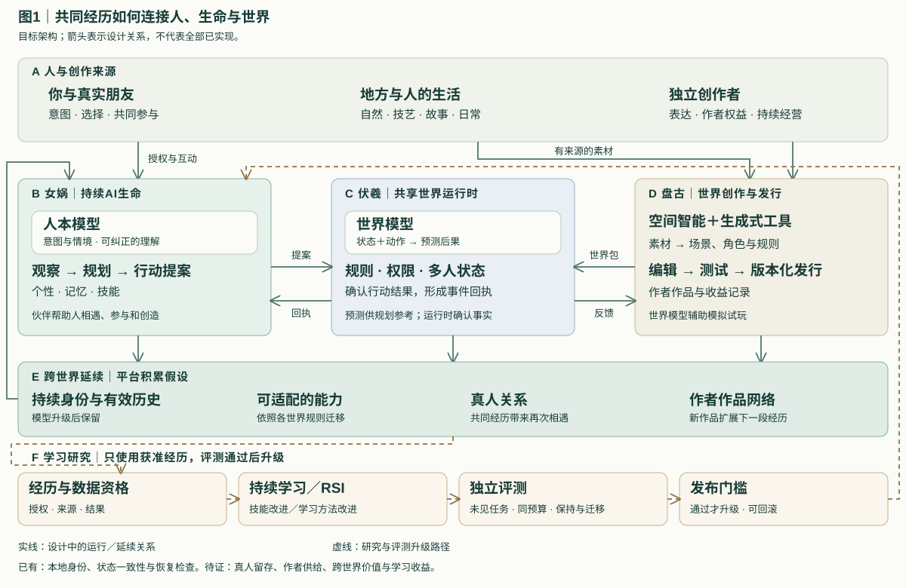

进入
地方作者把一门手艺、一段传说，做成你和朋友能够参与的冒险。
地方、文化与人的生活成为可参与的内容。关键在于：离开一部作品之后，有什么能够留下。
地方作者把一门手艺、一段传说，做成你和朋友能够参与的冒险。
共同解决问题，形成伙伴记忆、人的关系，以及来自这段经历的本领。
同一伙伴进入另一作者的作品；学到的辨声本领，可能成为新谜题的线索。
目标体验示例。能力按各世界规则适配，私人记忆按授权使用。
陪伴 / 探索 / 共创
概念影像，非实机人本模型与世界模型辅助判断，运行时提供可核对的事实。经历进入记忆与评测，能力升级保留生命身份。
意图与情境 → 行动提案
规则与权限 → 确认结果
空间与素材 → 可测试世界
持续学习研究能力保持与迁移；RSI研究学习方法的改进。以未见任务、同预算评测与回滚机制验证，目前尚未证明学习收益。

新作者带来体验，已有伙伴与关系带来参与动机。这个相互增强的关系，是LiveLiva要验证的平台假设。
人文目标让更多人的生活与创造，能够被他人亲历。
拟议商业路径付费体验、订阅与表达性道具，支持创作者分益。
北京大学计算机本硕。悉见创始人，后任贝壳创新负责人、千丁CTO。积累横跨游戏引擎、空间智能、交互式AI角色，以及产品商业化与团队经营。
产品、技术与合作方向
↗02机制、证据与下一阶段验证
↗03约38分钟中文对话＋图文精读
↗